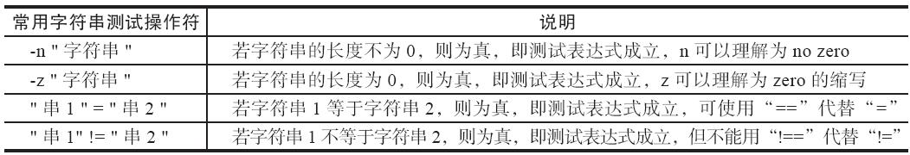
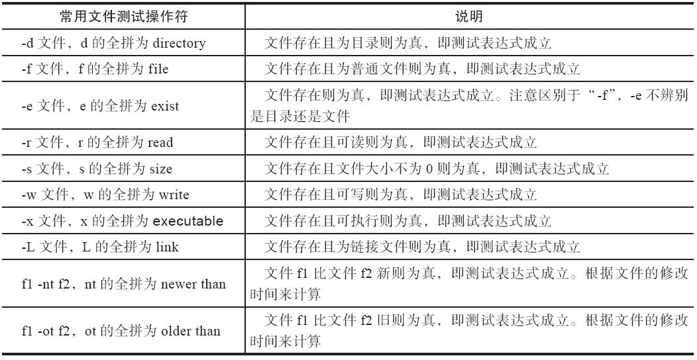

[[]]表达式与[]和test用法的选项部分是相同的，其与[]和test测试表达式的区别在于，在[[]]中可以使用通配符等进行模式匹配；并且&&、||、>、<等操作符可以应用于[[]]中，但不能应用于[]中，在[]中一般使用-a、-o、-gt（用于整数）、-lt（用于整数）等操作符代替上文提到的用于[[]]中的符号。
用[]测试变量时，如果被测试的变量不加双引号，那么测试结果可能会是不正确的，示例如下：
2
3
4
5
6
以执行unset oldgirl取消。
[root@oldboy ~]# [ -f $oldgirl ] && echo 1 || echo 0 #<==不加引号测试变量。
1 #<==明明$oldgirl变量不存在内容还返回1，逻辑就不对了
[root@oldboy ~]# [ -f "$oldgirl" ] && echo 1 || echo 0 #<==加引号测试变量。
0 #<==加了双引号就返回0，逻辑就对了。
字符串比较时若等号两端没有空格，则会导致判断出现逻辑错误，即使语法没问题，但是结果依然可能不对。
1 | [root@oldboy ~]# [ "abc"="1" ] && echo 1||echo 0 #<==若等号两端不带空格，则会 |
字符串不加双引号，可能会导致判断上出现逻辑错误，即使语法没问题，但是结果依然可能不对。
2
3
4
5
6
7
8
[root@oldboy ~]# [ -n "$var" ] && echo 1 || echo 0 #<==有双引号。
0 #<==给变量加双引号，返回0，-n不为空时为真，因为变量内容为空，因此输出0是对的。
[root@oldboy ~]# [ -n $var ] && echo 1 || echo 0 #<==去掉双引号。
1 #<==同样的表达式，不加引号和加双引号后测试的结果相反，可见加双引号的重要性。
[root@oldboy ~]# [ -z "$var" ] && echo 1 || echo 0 #<==如果字符串长度为0，则
输出1，否则输出0。
1

